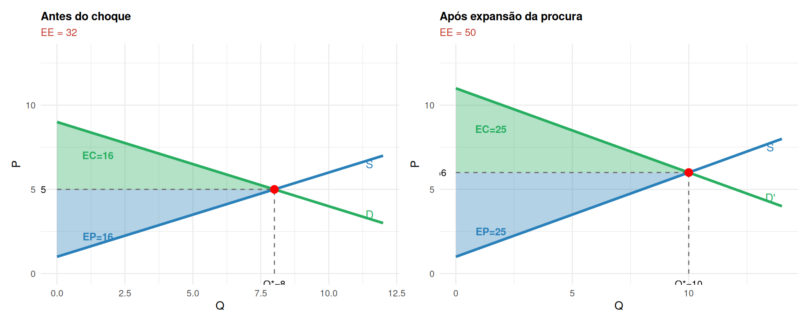

Equilíbrio de Curto Prazo, Dinâmicas e Excedente Total
Microeconomia — Licenciatura em Contabilidade e Administração
ISCAL - IPL
2026-04-02
O que é o Equilíbrio de Mercado?
O mercado de concorrência perfeita está em equilíbrio quando:
- Os consumidores compram exactamente a quantidade que desejavam adquirir ao preço vigente
- Os produtores vendem exactamente a quantidade que planeavam oferecer
- Não existe incentivo para nenhum agente alterar o seu comportamento
Important
Condição de equilíbrio: \(Q_d(p^*) = Q_s(p^*)\)
Ao preço de equilíbrio \(p^*\), a quantidade procurada iguala a quantidade oferecida.
Equilíbrio de Mercado: geometria
O ponto E é o equilíbrio: a “mão invisível” de Adam Smith (1776) conduz os agentes até aqui.
A Mão Invisível e a Eficiência
“Cada indivíduo não pretende promover o interesse público, nem sabe em que medida o está a promover. Ele é conduzido por uma mão invisível a promover um fim que não fazia parte dos seus planos.” — Adam Smith, A Riqueza das Nações, 1776
Em mercados concorrenciais, sem falhas de mercado:
- O equilíbrio resulta do ajustamento automático do preço
- É gerado por decisões descentralizadas e racionais
- O resultado é eficiente: o excedente total é máximo
Desequilíbrio: Excesso de Oferta
Quando \(p > p^*\): a quantidade oferecida excede a procurada — há excesso de oferta.
\(p_1 > p^* \Rightarrow q_s > q_d\) → produtores não conseguem escoar a produção → preço desce até \(p^*\).
Desequilíbrio: Excesso de Procura
Quando \(p < p^*\): a quantidade procurada excede a oferecida — há excesso de procura.
\(p_2 < p^* \Rightarrow q_d > q_s\) → consumidores não encontram o bem → preço sobe até \(p^*\).
Dinâmicas: Expansão da Procura
O que acontece quando a procura aumenta (desloca-se para a direita)?
\(D \uparrow\) → excesso de procura ao preço antigo → preço sobe → quantidade de equilíbrio aumenta.
Dinâmicas: Expansão da Oferta
O que acontece quando a oferta aumenta (desloca-se para a direita)?
\(S \uparrow\) → excesso de oferta ao preço antigo → preço desce → quantidade de equilíbrio aumenta.
Resumo das Dinâmicas
| Alteração | Efeito sobre \(P^*\) | Efeito sobre \(Q^*\) |
|---|---|---|
| \(\uparrow\) Procura | \(\uparrow\) | \(\uparrow\) |
| \(\downarrow\) Procura | \(\downarrow\) | \(\downarrow\) |
| \(\uparrow\) Oferta | \(\downarrow\) | \(\uparrow\) |
| \(\downarrow\) Oferta | \(\uparrow\) | \(\downarrow\) |
| \(\uparrow\) Procura e \(\uparrow\) Oferta | ? | \(\uparrow\) |
| \(\uparrow\) Procura e \(\downarrow\) Oferta | \(\uparrow\) | ? |
Quando dois choques ocorrem simultaneamente, o efeito num dos preços ou quantidades pode ser indeterminado — depende da magnitude relativa dos choques.
Empresa vs. Mercado no Curto Prazo
No equilíbrio, o preço \(p^*\) é formado pela interacção de todos os agentes. Cada empresa \(i\) toma-o como dado e optimiza individualmente.
A empresa \(i\)
- Enfrenta procura horizontal \(D_i: p = p^*\)
- Produz onde \(p^* = CMg_i\) (parte ascendente)
- A curva \(CMg_i\) ascendente é a sua oferta individual
O mercado
- \(D\) e \(S\) determinam \(p^*\) e \(Q^*\)
- \(Q^* = \sum_i q_i^*\) (soma das escolhas individuais)
- Cada empresa é price-taker
Note
No curto prazo, o número de empresas é fixo. O preço de equilíbrio pode ser tal que as empresas tenham lucro, prejuízo, ou resultado nulo — dependendo de \(p^*\) vs \(CTM\).
Excedente Económico Total
Excedente Económico Total (EE)
\[EE = EC + EP\]
O excedente total mede o valor gerado pelas trocas no mercado — o ganho mútuo que consumidores e produtores obtêm ao transaccionarem, em vez de não o fazerem.
Excedente Total e Eficiência
O excedente total é máximo no equilíbrio concorrencial — qualquer outra quantidade transaccionada reduz-o.
Quantidade abaixo de \(Q^*\) (\(Q < Q^*\)):
- Há trocas mutuamente benéficas que não ocorrem
- Produz-se menos do que seria desejável
- Perda de eficiência (deadweight loss)
Quantidade acima de \(Q^*\) (\(Q > Q^*\)):
- Produzem-se unidades cujo custo excede o benefício
- O valor para o consumidor é inferior ao custo de produção
- Também há perda de eficiência
Important
A concorrência perfeita maximiza o excedente total — por isso se diz que é a estrutura de mercado eficiente, na ausência de falhas de mercado.
Excedente após um Choque de Procura
Quando a procura se expande de \(D\) para \(D'\), o novo equilíbrio gera mais excedente total.

A expansão da procura beneficia ambos os lados do mercado: EC e EP aumentam.
Exercícios
Exercício 1 (Escolha Múltipla)
Num mercado, a oferta de um bem reduz-se (a curva desloca-se para a esquerda). Ceteris paribus, o que acontece ao equilíbrio?
(A) O preço sobe e a quantidade de equilíbrio aumenta.
(B) O preço desce e a quantidade de equilíbrio aumenta.
(C) O preço sobe e a quantidade de equilíbrio diminui.
(D) O preço desce e a quantidade de equilíbrio diminui.
. . .
Solução
Resposta: (C)
Redução da oferta → curva \(S\) desloca para a esquerda → excesso de procura ao preço anterior → preço sobe. Com preço mais alto e procura inalterada, a quantidade transaccionada diminui.
Exercícios
Exercício 2 (Escolha Múltipla)
Num mercado em equilíbrio com \(p^* = 10\) e \(Q^* = 20\). A curva de procura é linear com ordenada na origem \(P = 20 - \frac{Q}{2}\) e a oferta tem ordenada na origem \(P = 2\) (no eixo dos preços). Qual o excedente económico total?
(A) 100
(B) 160
(C) 180
(D) 200
. . .
Solução
Resposta: (C)
\(EC = \tfrac{1}{2}(20 - 10)\times 20 = 100\)
\(EP = \tfrac{1}{2}(10 - 2)\times 20 = 80\)
\(EE = EC + EP = 180\)
Exercício 3 (Desenvolvimento)
O mercado de um bem tem as equações: \[Q_d = 18 - 2P \qquad Q_s = 2P - 2\]
a) Calcule o preço e a quantidade de equilíbrio.
b) Calcule o excedente do consumidor (EC), excedente do produtor (EP) e o excedente total (EE).
c) A procura expande-se para \(Q_d' = 22 - 2P\). Determine o novo equilíbrio e os novos excedentes. Quem ganha mais com esta expansão?
d) Utilizando a tabela de dinâmicas, explique o que aconteceria se, simultaneamente, a procura expandisse e a oferta contraísse.
Solução
a) \(18 - 2P = 2P - 2 \Rightarrow 4P = 20 \Rightarrow P^* = 5\), \(Q^* = 8\).
b) Interceptos: procura \(P=9\), oferta \(P=1\).
\(EC = \tfrac{1}{2}(9-5)\times 8 = 16\) \(\quad\) \(EP = \tfrac{1}{2}(5-1)\times 8 = 16\) \(\quad\) \(EE = 32\).
c) \(22 - 2P = 2P - 2 \Rightarrow 4P = 24 \Rightarrow P^{*\prime} = 6\), \(Q^{*\prime} = 10\).
Novo intercepto da procura: \(Q_d'=0 \Rightarrow P=11\).
\(EC' = \tfrac{1}{2}(11-6)\times 10 = 25\) \(\quad\) \(EP' = \tfrac{1}{2}(6-1)\times 10 = 25\) \(\quad\) \(EE' = 50\).
Ambos ganham igual (\(+9\) cada). O excedente total aumentou \(+18\).
d) Procura \(\uparrow\) e oferta \(\downarrow\): o preço sobe inequivocamente (\(\uparrow P\)). O efeito na quantidade é indeterminado — depende da magnitude relativa dos dois choques.
Síntese
- O equilíbrio ocorre onde \(Q_d = Q_s\); ao preço \(p^*\) nenhum agente quer desviar-se.
- O ajustamento é automático: excesso de oferta faz o preço descer; excesso de procura faz-o subir.
- Deslocações da curva \(D\) ou \(S\) alteram o equilíbrio — o sentido depende da direcção do choque.
- Com dois choques simultâneos, um dos efeitos (\(P^*\) ou \(Q^*\)) pode ser indeterminado.
- O excedente total \(EE = EC + EP\) é máximo no equilíbrio concorrencial.
- Qualquer quantidade diferente de \(Q^*\) implica perda de eficiência (deadweight loss).
- A expansão da procura ou da oferta beneficia ambos os lados do mercado — o EE aumenta.